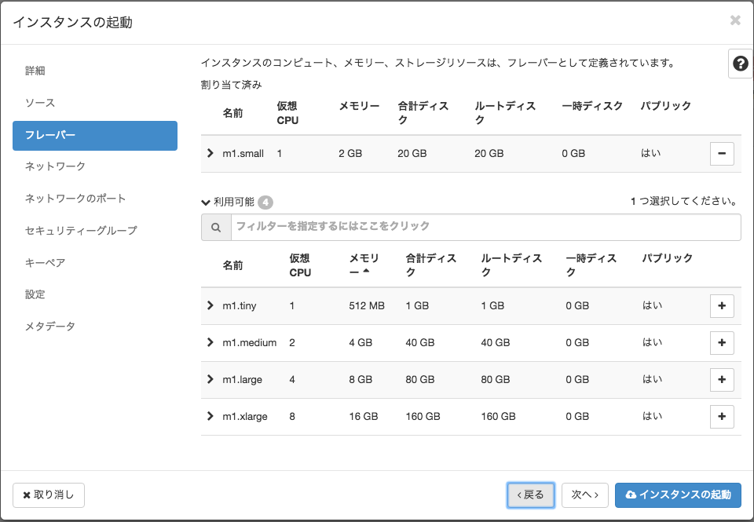
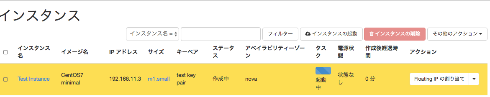
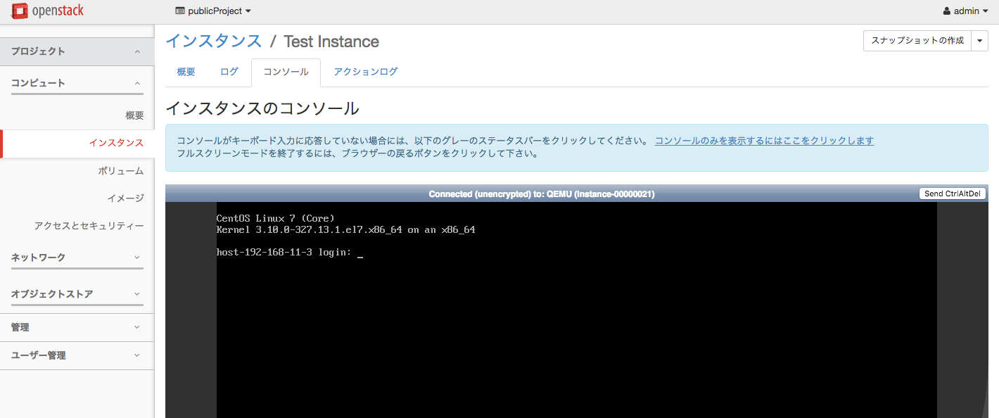

仮想マシン(インスタンス)のデプロイ¶
仮想マシン(インスタンス)について¶
前提¶
- 仮想ネットワーク名「Sample Network」内に仮想マシン「Test Instance」を構築する
- OS : CentOS 7
- 仮想CPU : 1core
- 仮想メモリ : 2GB
- 仮想ディスク : 20GB(フレーバ-内蔵の一時領域)
構築手順¶
- ダッシュボードより「コンピュート」→「インスタンス」を選択する
- 「インスタンス」の起動を選択する
- Instance Nameに「Test Instance」と入力する。（その他はデフォルト）
{kind=link}
- ブートソースは「イメージ」を選択する。新規ボリュームは選択しない。
- 利用可能な「イメージ」が画面下部に表示されている為、今回は「CentOS7 minimal」を選択します。
{kind=link}
注釈
- 「新規ボリューム」を作成すると、他の仮想マシンでも再利用可能な仮想ハードディスクを用意し、そこにイメージをインストールします。
- 「新規ボリューム」を作成せずにデプロイを行うと、後で設定する「フレーバ」に定義された 容量の仮想ディスクが仮想マシンに接続されます。この方法はデプロイが”高速”である反面、仮想マシンを削除した際に仮想マシン上のデータも削除されます。
- また、「フレーバー」に定義されている仮想ディスク容量が後に設定するOSのインストールサイズより小さい場合、エラーとなり、仮想マシンのデプロイに失敗します。
- 「フレーバー」はm1.smallを選択します。このフレーバーを選択することで、デプロイする仮想マシンのスペックは以下の通りとなります。

CPU メモリ ディスク（一時的なもの） 1core 2GB 20GB
{kind=link}
- 仮想マシンが接続されるネットワークを選択します。「Sample-Net」を選択します。
{kind=link}
注釈
ここでは「仮想ネットワークの作成」で「Sample-Net」が作成済みである事を前提とします。
- ネットワークのポートは設定しません
- セキュリティーグループでは、仮想マシンに割り当てるファイアウォールの定義を行います。今回は「default」を選択します。
{kind=link}
- キーペアの画面では「キーペアの作成」をクリックする。
{kind=link}
注釈
キーペアとは、ゲートウェイサーバから仮想マシンへSSH接続する際に必要なSSH秘密鍵です。 後から設定したり、作成済みのキーペアをダウンロードする事は出来無いため、注意してください。
- キーペア名に任意の名前を指定します。作成すると、自動的にキーペアをダウンロードします。
{kind=link}
- ここまで設定する事で、仮想マシンのデプロイが出来ます。「インスタンスの起動」を選択します。
インスタンス起動後、ウィザードが閉じ、以下の画面になります。
{kind=link}
注釈
仮想マシンが作成されます。
- 仮想マシン作成完了後、インスタンス名をクリックする事で個別のページを遷移します。
「コンソール」を選択すると、仮想マシンのコンソール画面が表示されます。これは、実際のマシンの物理モニタと同じ位置づけになります。
{kind=link}
警告
今回デプロイした仮想マシンにはユーザIDにパスワードが設定されていない為、初期状態ではコンソールでのログインができません。ゲートウェイサーバからSSH接続完了後にパスワードを設定する事で使用が可能となります。